Passo a passo, uma seção do Settings de cada vez. As capturas vêm do protótipo, com Sandra Lopes (administradora da Ridgeline Concrete & Masonry) para pessoas e regras, e com Tom Reilly (administrador da Northfield Framing & Siding) para a empresa, os contatos, as obras e o cronograma.
Abra o Settings pela tela de módulos (ou pelo botão de módulos no canto superior direito). O menu da esquerda mostra só as seções que o seu perfil pode abrir.
Funcionários
Para que serve: um cadastro por pessoa que trabalha nas obras, usado pelo ponto, pelas timesheets e pelo custo da obra.
Quem pode fazer
Quem tem Cadastro de funcionários (perfil padrão: Administrador).
A lista mostra cada funcionário com ofício e equipe, classificação, valor hora e custo carregado (valor hora + encargos), situação e as certificações perto de vencer. A faixa no topo diz de quem são os funcionários: cada empresa cadastra e cuida dos seus.

Cadastrar ou editar um funcionário
- Clique em Novo funcionário (ou abra um funcionário e clique em Editar cadastro).
- Preencha:
- Identificação: nome completo, código (a mesma matrícula da folha), telefone, contato de emergência. Empresa (empregador) é fixo: o funcionário pertence à sua conta.
- Contrato e trabalho: classificação (empregado W-2 ou autônomo 1099 — autônomos não têm hora extra nem encargos), FLSA (funcionários exempt não recebem hora extra), ofício, equipe, data de admissão, situação e data de desligamento.
- Para um funcionário novo, o valor hora inicial.
- Certificações: OSHA 10/30, licenças, operador de equipamento… com a data de validade.
- Privacidade: a data em que o funcionário aceitou o aviso de localização (o ponto só registra a localização com o ponto aberto).
- Salve.
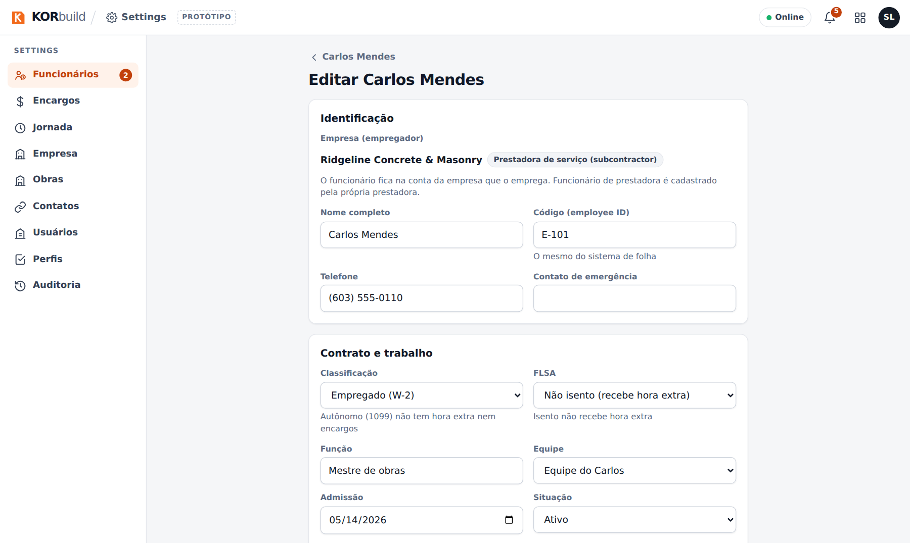
O que o KORbuild não guarda
SSN e documentos de imigração ficam no seu sistema de folha. O KORbuild guarda só a matrícula, para fazer a ligação.
Alterar o valor hora
- Abra o funcionário: os cartões mostram o valor hora atual, o valor da hora extra e o custo carregado.
- Clique em Alterar valor hora, informe o valor novo, a data a partir da qual vale e o motivo.

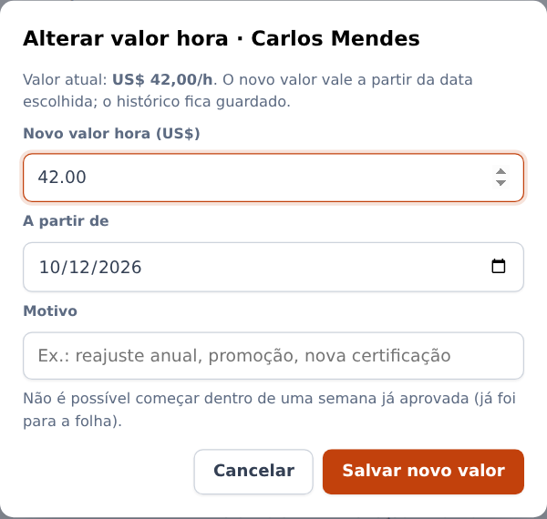
O histórico do valor hora guarda cada valor com as datas, a mudança e o motivo. Nada é sobrescrito: as horas de cada dia são pagas pelo valor vigente naquele dia. Um valor novo não pode começar dentro de uma semana já aprovada para a folha.
Encargos
Para que serve: o que a empresa paga além do salário, para o custo da obra mostrar o custo real de uma hora.
Quem pode fazer
Quem tem Encargos e regras de jornada (perfil padrão: Administrador). Só para empresas com o Crew.
A tela mostra a versão vigente — FICA, FUTA, SUTA, workers' comp e benefícios, com o total — e um exemplo (quem ganha US$ 30,00/h custa US$ 39,62/h). Abaixo, o histórico de versões.
Para mudar, clique em Nova versão, informe cada percentual, a data a partir da qual vale (nunca no passado) e o motivo.
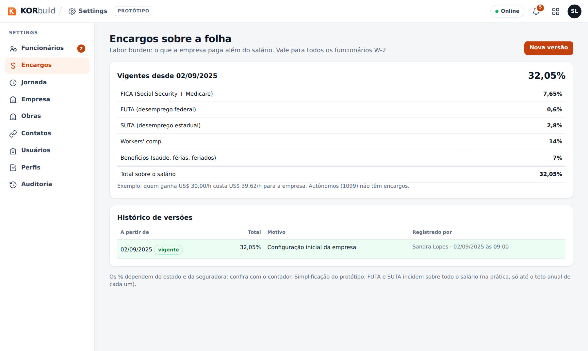
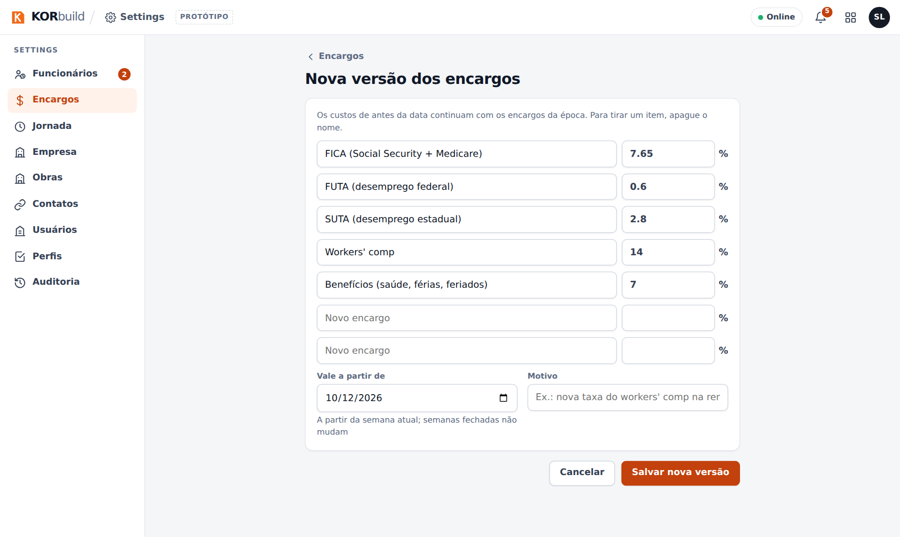
Pergunte ao seu contador
Os percentuais dependem do estado e da seguradora. No protótipo, FUTA e SUTA valem sobre todo o salário; na prática, param no teto de cada ano.
Jornada
Para que serve: as regras de hora extra e de intervalo que o ponto, as timesheets e os custos seguem.
Quem pode fazer
Quem tem Encargos e regras de jornada (perfil padrão: Administrador). Só para empresas com o Crew.
A tela mostra a regra vigente — hora extra semanal, hora extra diária, intervalo, arredondamento — e o histórico. Para mudar:
- Clique em Nova versão.
- Comece por um modelo (FLSA federal, New Hampshire, Califórnia…) ou preencha: hora extra semanal (horas e fator), hora extra diária e dobrada (opcionais), o intervalo mínimo e depois de quantas horas.
- Escolha a semana em que começa (as regras valem para semanas inteiras, a partir de uma segunda-feira) e o motivo.
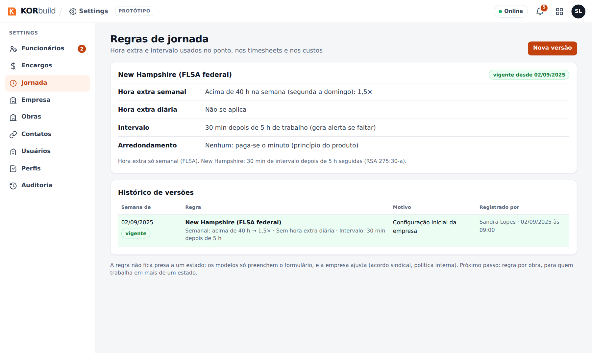
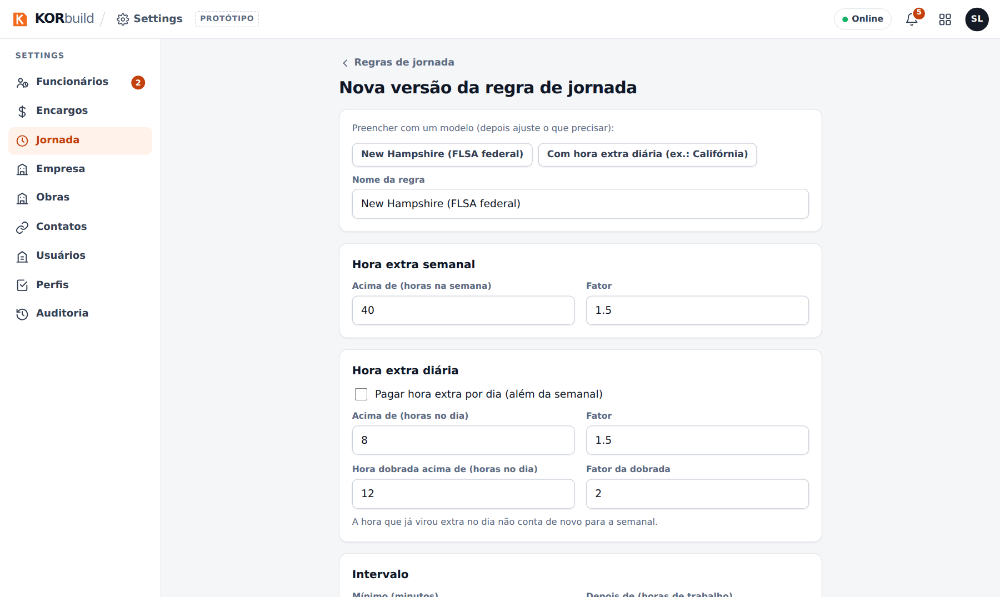
Empresa
Para que serve: como a sua empresa aparece nas propostas, nos diários e nos documentos.
Quem pode fazer
Quem tem Empresa, conta e plano (perfil padrão: Administrador).
Preencha o logo, a razão social, o EIN, como a empresa atua (prestadora, construtora ou as duas), endereço, telefone, e-mail e site, licenças e seguros, e os termos padrão da proposta (cada proposta ainda pode ajustá-los).
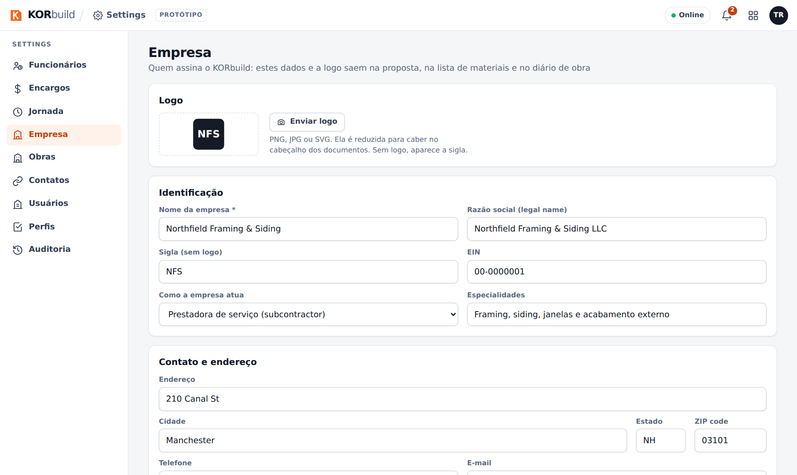
Contatos
Para que serve: um só cadastro de todos de fora da empresa — construtoras, clientes (donos), fornecedores e subempreiteiros.
Quem pode fazer
Quem tem Contatos (perfil padrão: Administrador). Escolher ou criar um contato dentro de um projeto ou de uma obra faz parte de medir ou de cuidar das obras.
- Abra Contatos: a lista, com um filtro por marcador.
- Novo contato (ou abra um): marque o que ele é — um contato pode ter mais de um marcador — e preencha os dados.
- Para um fornecedor, marque as etapas (cost codes) que ele fornece: a lista para cotação (Measure) manda para ele só esses itens.
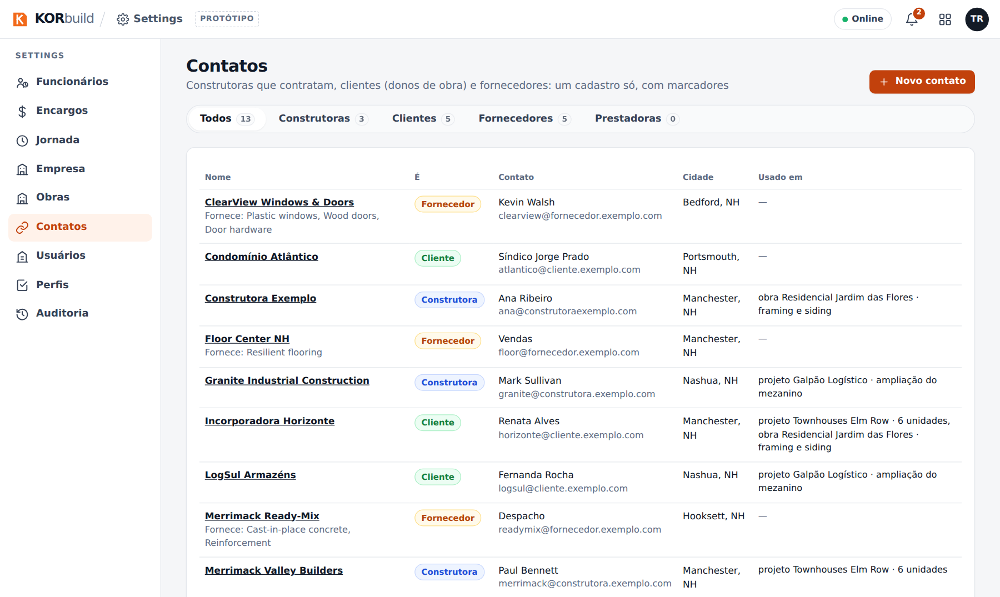
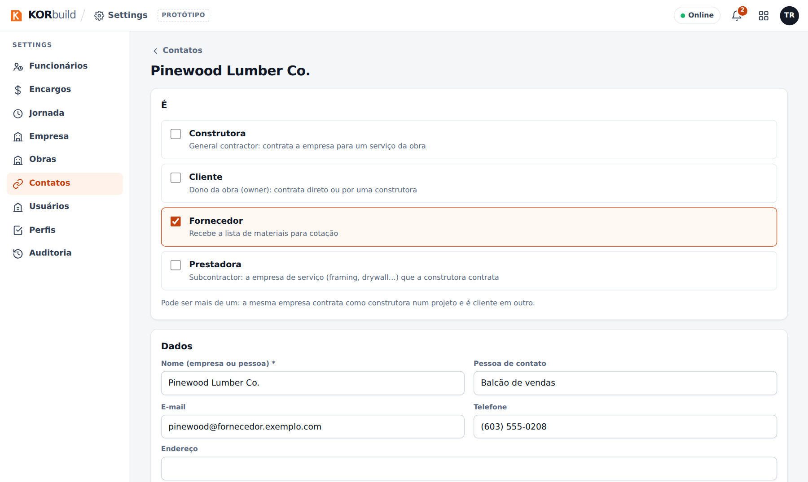
Contatos não são usuários: recebem diários, pedidos de cotação e propostas por link ou e-mail. Um contato em uso num projeto ou numa obra não pode ser excluído.
Obras
Para que serve: um cadastro por obra, usado por todos os módulos.
Quem pode fazer
Quem tem Cadastrar e editar obras (perfis padrão: Administrador e Gestor de obras). Nova obra também aparece em Daily › Obras, e Editar a obra em cada obra.
Settings › Obras lista todas as obras com o cliente, as datas, quem preenche o diário, o cronograma (etapas e avanço) e a situação, com abas por situação.
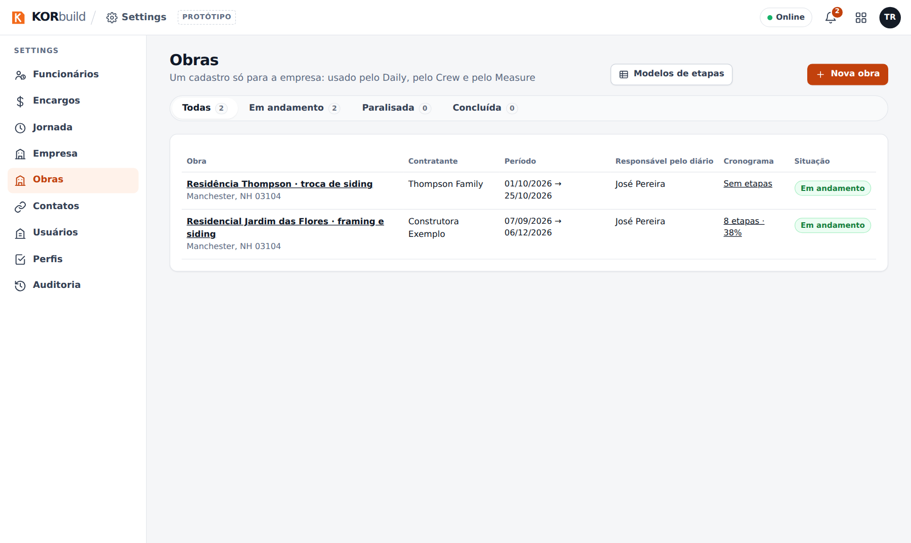
Criar uma obra
- Clique em Nova obra.
- Preencha:
- Obra: nome e situação (Em andamento, Paralisada, Concluída). Só as obras em andamento exigem diário e aparecem nos celulares de campo e no ponto.
- Partes: o cliente (quem recebe os diários) e o dono da obra, se for outro. Novo cria um contato sem sair do formulário.
- Local e cerca do ponto: endereço, cidade, estado, ZIP; depois clique no local da obra no mapa (ou em Usar a localização atual, se estiver na obra). O círculo é a cerca: batidas fora dela são sinalizadas para o escritório. O raio vai de 50 a 2.000 m (150 m por padrão). O mesmo local define o clima nos diários.
- Prazo e diário de obra: início, término, quem preenche o diário, e os dias de trabalho (os dias que exigem diário).
- Cronograma: Começar com um modelo distribui as etapas entre o início e o término, nas proporções do modelo, e salva a primeira linha de base. Ou não escolha nenhum e monte depois.
- Clique em Criar obra.
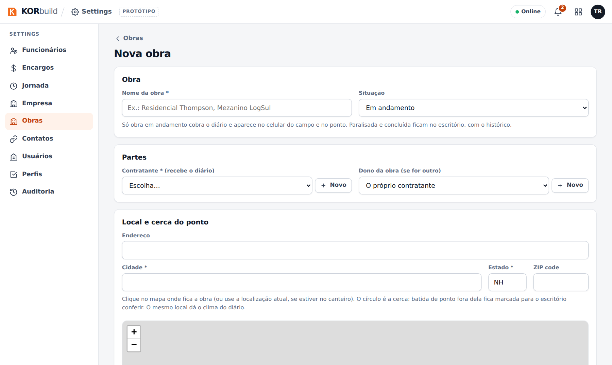
Um projeto ganho no Measure tem Criar obra a partir deste projeto, que abre este formulário já preenchido; o projeto e a obra ficam ligados.
Na conta de uma construtora
A obra da construtora não tem responsável pelo diário, dias de trabalho nem cronograma: cada prestadora mantém isso na própria obra ligada a ela. A lista de obras mostra as prestadoras de cada obra.
Modelos de etapas
Os Modelos de etapas (botão em Settings › Obras) são os cronogramas padrão da sua empresa: uma lista de etapas com a parte do prazo de cada uma (%, somando 100). Crie com Novo modelo; eles são oferecidos ao criar uma obra ou numa obra ainda sem etapas.
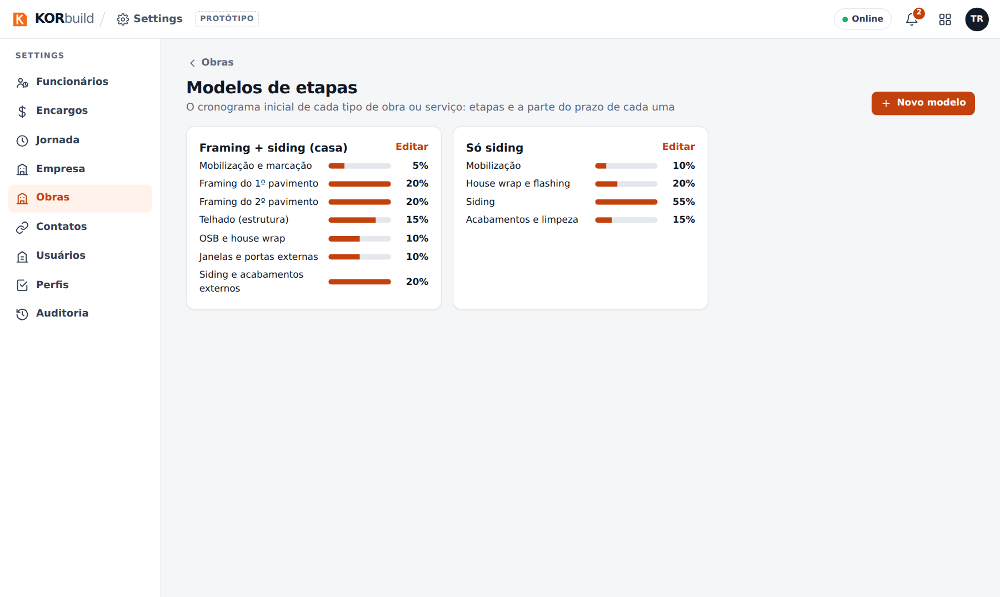
O cronograma da obra
Para que serve: saber se a obra está no prazo, etapa por etapa — e mostrar isso à construtora.
Quem pode fazer
Montar: quem tem Montar o cronograma da obra (perfis padrão: Administrador e Gestor de obras) na empresa que executa. Os encarregados veem as Próximas 3 semanas. A construtora vê as versões publicadas.
Abra pela obra: Daily › Obras › uma obra › Abrir cronograma (ou Montar cronograma quando ela não tem etapas).
Os cartões do topo mostram o avanço real contra o planejado para hoje, as etapas atrasadas (e em risco) e o término previsto contra a linha de base. Abaixo, cada etapa com datas, duração, responsável, situação, % concluído e desvio em relação à linha de base, e o gráfico de Gantt: a barra colorida é a etapa (preenchida até o %), a barra cinza embaixo é a linha de base, a linha vertical é hoje.

Trabalhar com as etapas
- Nova etapa: nome, início, término, responsável.
- Atualizar %: o novo % concluído, com uma observação; vai para o histórico da etapa.
- Editar: datas e nome; as setas mudam a ordem.
- Salvar nova linha de base: quando o plano muda de vez (com um motivo). Os desvios são sempre medidos contra a linha de base mais recente; as anteriores ficam guardadas.
- Exportar Excel: uma planilha de verdade com o cabeçalho da sua empresa, a tabela de etapas e as barras do Gantt semana a semana.
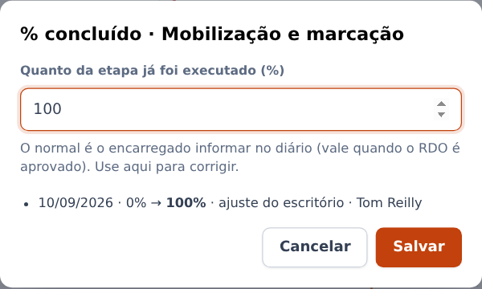
% concluído pelo diário
No diário, cada atividade pode apontar para uma etapa do cronograma e o % concluído dela. Quando o diário é aprovado, o % vai para a etapa, com o diário como origem. O encarregado vê as Próximas 3 semanas na tela da obra no celular.
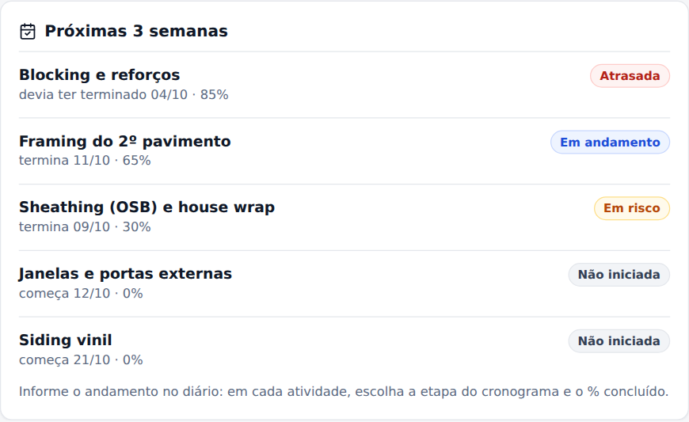
Publicar para a construtora
- Clique em Publicar para o contratante.
- Confirme: a construtora vai ver esta versão — datas, avanço e desvios — sem poder editar. Mudanças depois só aparecem quando você publicar de novo.
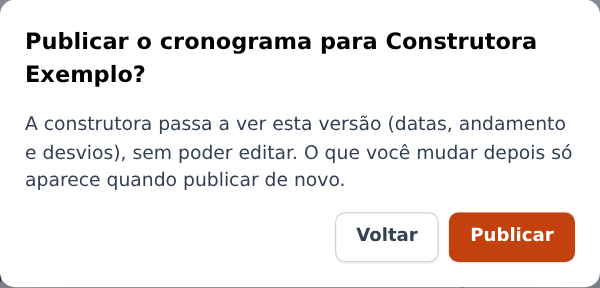
A construtora vê os Cronogramas das prestadoras na obra dela, com a versão e a data de cada um, abre só para consulta e pode exportar para o Excel.
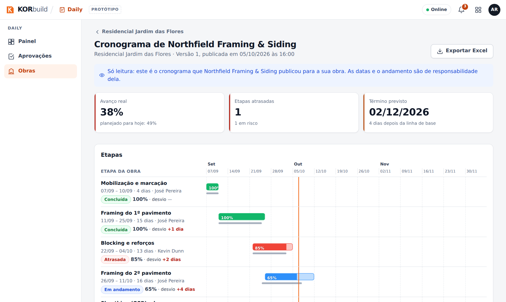
Usuários
Para que serve: quem entra no sistema, e com qual perfil.
Quem pode fazer
Quem tem Usuários e perfis de acesso (perfil padrão: Administrador).
A lista mostra cada usuário com e-mail, perfil, o cadastro de funcionário ligado a ele e o último acesso. Para incluir um:
- Clique em Novo usuário.
- Preencha nome, e-mail (login) e cargo.
- Cadastro de funcionário: ligue o usuário ao cadastro de funcionário dele se ele bate o ponto no próprio celular (obrigatório nesse caso), ou escolha Não é funcionário de obra.
- Escolha o perfil de acesso. Cada perfil mostra onde a pessoa cai ao entrar (por exemplo, um Trabalhador vai direto para o Meu ponto).
- Salve.
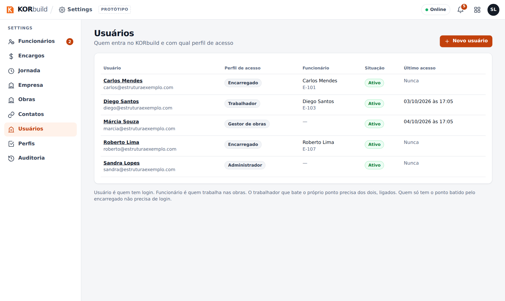
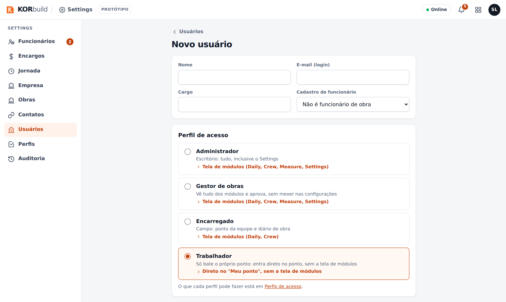
Perfis de acesso
Para que serve: decidir o que cada perfil pode fazer.
Quem pode fazer
Quem tem Usuários e perfis de acesso (perfil padrão: Administrador).
A matriz mostra as permissões (agrupadas por módulo) contra os perfis, com quantos usuários têm cada perfil. Marque ou desmarque e clique em Salvar permissões. Novo perfil cria um perfil a partir de um existente. O perfil Administrador é travado.
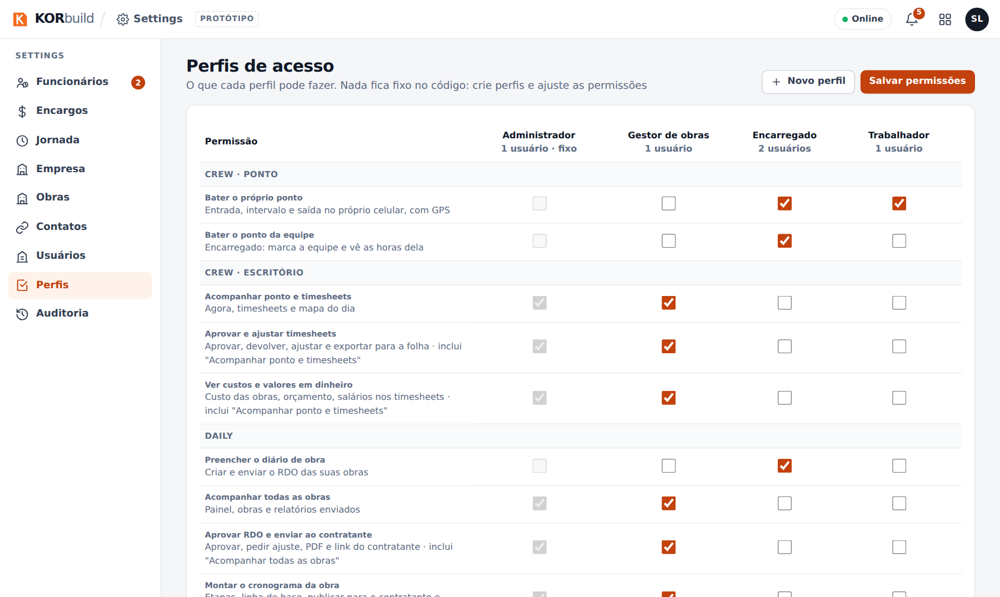
Veja Perfis e permissões para o catálogo completo e as regras.
Auditoria
Toda mudança no Settings — funcionários, valores hora, encargos, regras de jornada, obras, usuários, perfis, contatos, preços — com quando, quem, o quê, o valor antes e depois, e o motivo.
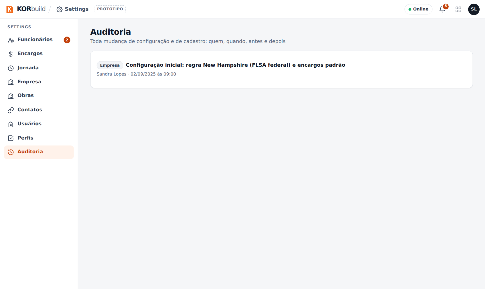
Mensagens e alertas
| Mensagem | O que significa | O que fazer |
|---|---|---|
| Certificação vence em N dias | Uma certificação vence em até 30 dias (também no menu e nas notificações). | Renove e atualize a data. |
| Um valor não pode começar numa semana aprovada | A semana já foi para a folha. | Escolha uma data depois dela. |
| Uma versão não pode começar no passado | Encargos e regras de jornada só valem para a frente. | Escolha hoje ou uma data depois. |
| Um perfil em uso não pode ser excluído | Ainda há usuários com ele. | Troque antes o perfil deles. |
| A empresa precisa manter alguém que cuide dos acessos | Você tentou tirar o último usuário com Usuários e perfis de acesso. | Dê essa permissão antes a outro usuário ativo. |
| Escolha quem preenche o diário | Uma obra em andamento precisa de um responsável. | Escolha um usuário com Preencher o diário de obra. |